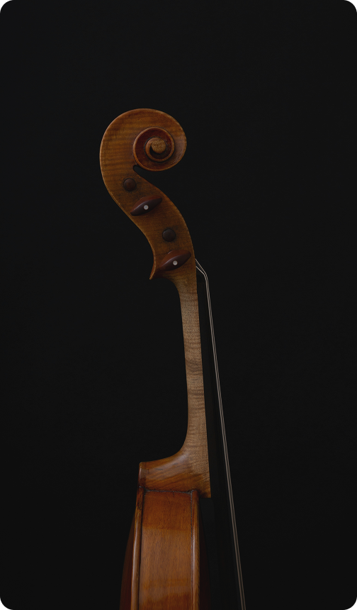

Во время концерта будет осуществляться трансляция на ведущих стриминговых сервисах России — ВК Видео Live, ВК Музыка, Яндекс Музыка. В рамках концертного мероприятия будет осуществлена профессиональная видеозапись, которая будет отправлена на Международную космическую станцию! Мы хотим поделиться нашим творчеством, эмоциями и мыслями с Космосом! Мы построим музыкальный МОСТ между Землей и МКС.

М.О.С.Т представляет
Погрузитесь в незабываемый вечер, где музыка барокко и джаз переплетаются с историей научных открытий. Слушая произведения Баха, Чайковского и других, вы откроете, как изобретение телескопа и научная революция вдохновили музыку на поиски гармонии в бесконечности космоса.
Исполнители -

Стародубцев Евгений
- Российский пианист, солист Москонцерта
- Лауреат 50+ международных конкурсов
Вильям Хайло
- Скрипач, лауреат 20+ международных и всероссийских конкурсов
- Титул: «Молодое дарование России»
- Студент МГК им. Чайковского
- Амбассадор проекта «Музыка на здоровье» от госпитальной школы «Учим&Знаем»
ПРОЕКТ
Мы объединим на одной сцене представителей международной музыкальной исполнительской культуры, с целью сохранения культурной идентичности и совместного творчества. Музыканты из разных стран — России, Китая, США, Армении, Беларуси, Англии (список открытый) — встретятся в рамках культурного мероприятия — концерта, чтобы поделиться друг с другом и зрителями своей музыкой! Концертная программа представляет произведения русских композиторов, шедевры, преодолевшие время: М.И. Глинка, А.П. Бородин, П.И. Чайковский, С.В. Рахманинов, И. Стравинский, А.Н. Скрябин, Д.Д. Шостакович, С.С. Прокофьев. Насыщенная программа включает в себя составы музыкантов от сольных и дуэтных исполнителей до студенческого оркестра, в составе которого молодые музыканты — международные представители музыкальной культуры своих стран.